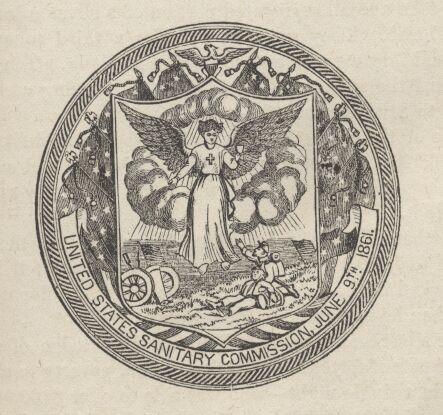
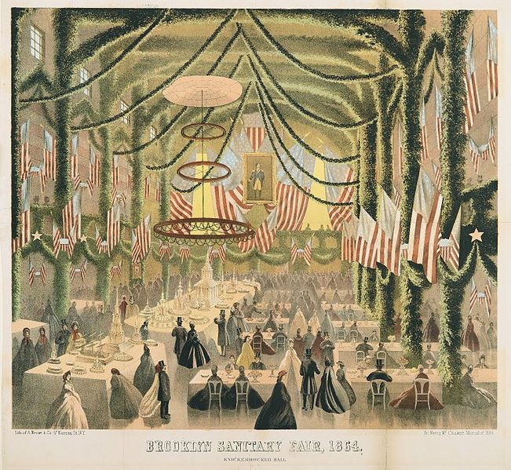

|
Formed in response to the rapid growth of the United States
Army during 1861, the U.S. Sanitary Commission (USSC)
consisted of Northerners on the homefront joined together in
order to provide medical care, supplies and other
necessities for the soldiers in the Union Army. Inspired by
the British Sanitary Commission that was active during the
Crimean War, this group not only hoped to make improvements
on the poor hygiene of the camps and the health of the
soldiers, but also to assist the wounded and coordinate the
distribution of food and supplies to the men in blue.
The Commission's network consisted of tens of thousands
of largely female volunteers in numerous soldiers aid and
ladies aid societies. Many of the societies were affiliated
with the Woman's Central Relief Association, which provided
the majority of the hands-on work at the local level. At
the national level, the USSC was led by Henry W. Bellows,
the president, along with George Templeton Strong, the
|

The seal of the United States Sanitary
Commission
|
treasurer, and Frederick Law Olmsted, the secretary. These
men were dedicated to creating an organization that not only
assisted the Northern soldiers, but also educated people
about the importance of discipline and sacrifice in society.
While the hierarchy of the organization was male, the "foot
soldiers" of the USSC's campaign were generally women. The
women of the Commission used grassroots, locally organized
female activism to promote the USSC's goals. During the
four years of the Civil War, the Commission's men and women
raised at least $7 million and were responsible for
distributing $15 million worth in supplies.
One of the Commission's most reliable sources of income
came from the numerous community fairs they held in the
years during and after the war. These "Sanitary Fairs" were
held in small and large cities throughout the North and
usually lasted for 10 to 14 days. During this time, schools
and businesses would close to allow the entire community to
participate in the exhibits, shops and entertainment
presented at the fairs. The fairs raised money by charging
admission, collecting donations, selling toys, crafts, and
Civil War memorabilia, and food. The first large-scale
sanitary fair, put on by the Northwestern Sanitary
Commission in Chicago raised over $100,000 in October of
1863. In April of 1864 New York's "Metropolitan Fair"
netted $1 million for the USSC. When all was said and done,
the fairs raised approximately $4 million, a significant
portion of the U.S. Sanitary Commission's total budget.
The USSC served as an on-call support group for areas
that suffered the most during the war. Following large
battles where the military's medical staffs and the local
citizens could not adequately provide for the sick and dying
soldiers, the U.S. Sanitary Commission would be called upon
to give them assistance.
Upon arrival, the U.S. Sanitary Commission would help set
up temporary hospitals and provide medical assistance to the
wounded. By assisting the wounded, the Commission's
volunteers would not only help them medically, but they
would also write letters for the soldiers to their loved
ones at home, read the Bible to the soldiers, and most of
all provide moral support to the wounded. Through their
volunteer work and the extra assistance they provided, many
|

Despite the ongoing war effort, the Sanitary Fairs
organized by the USSC could be very festive events, such as this fair
held in Brooklyn in 1864.
|
of the wounded soldiers were able recover and continue
fighting with their respective regiments.
Despite the philanthropic nature of the U.S. Sanitary
Commission, there were a number of people who disagreed with
the philosophies held by the administrators of the
commission. The poet Walt Whitman, a wartime nurse,
believed that they contradicted the spirit of volunteerism
and philanthropy in America. Dorothea Dix, a prominent
nurse during the Civil War, frequently disagreed with the
leaders' concepts of wartime volunteerism. Throughout the
War, controversies continuously erupted regarding the
commission's leaders. Many people were disconcerted by the
increasing control the administrators were exercising, who
were accused of spending the organization's dollars
frivolously.
It is important to note, however, that the vast majority
of the men, women, and even children who volunteered for the
Commission did so out of the goodness of their heart for the
benefit of their fellow countrymen. A number of smaller
women's organizations and aid societies created to assist
the soldiers were eager to help the USSC in every way
possible.
The U.S. Sanitary Commission was the most recognizable
philanthropic organization during the Civil War. Dedicated
to improving the well being of the Union soldiers, the
commission provided invaluable medical assistance and moral
support that enabled the soldiers to continue their fight to
save the Union. The USSC also helped develop a
nationally-active, women's community, elements of which went
on after the Civil War to promote other agendas, like
women's suffrage and other reforms like temperance, in the
United States.
Source: Joan Waugh, ed., Facts on File Encyclopedia of American
History: Civil War and Reconstruction, 1856 to 1869 (New York: Facts on
File, 2003), 373-375.
|